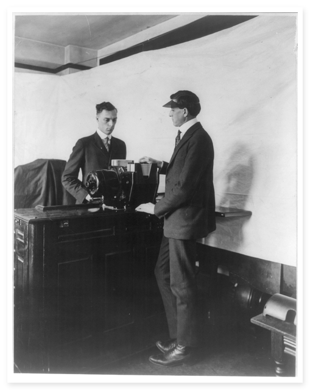
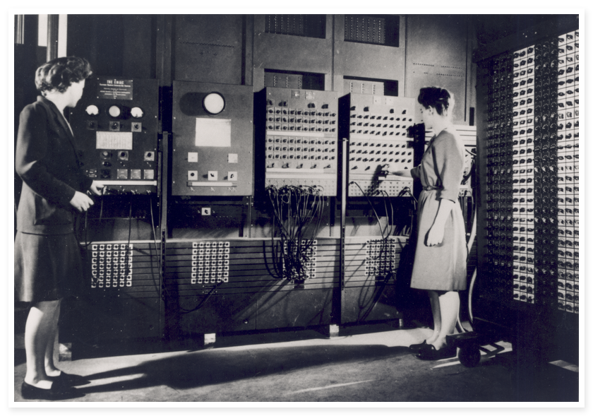

Module 0.1 Interactive Storyboard
Why Did Humans
Need to Compute?
The crisis of demographic scale, the fatal cost of arithmetic errors, and the dawn of symbolic manipulation.
📜 1880 Census Crisis
⚓ Warship Vasa (1628)
💥 Artillery Ballistics
⚡ Definition of Computation
The 1880 Census Crisis
When population exploded, paper, pencils, and human clerks hit an insurmountable biological bottleneck.
50M
United States Population
50 million individual citizen records requiring age, occupation, and family tallies.
8 Years
Time to Hand-Tally
Taken in 1880, final totals published in 1888. The next census was only 2 years away!
1890?
Imminent Constitutional Failure
The 1890 count would overlap 1900, paralyzing congressional redistricting and federal funding.
⚠️
This wasn't a failure of effort. It was a failure of scale.

1880 Hand-Tally Clerks
The Fatal Cost of Arithmetic Errors
In navigation and warfare, hand calculations and typesetting mistakes caused catastrophic disasters.
Navigation & Engineering
The Swedish Warship Vasa (1628)
Navigators relied on hand-calculated printed logarithm tables. Calculation and measurement errors contributed to the mighty warship *Vasa* sinking on its maiden voyage.
Consequence
Catastrophic Shipwreck
Artillery & Ballistics
Aberdeen Proving Ground (WW1 & WW2)
Gun crews needed firing tables calculated for angle, wind, and shell weight. Teams of human "computers" spent days per single trajectory—becoming a strategic liability that spurred ENIAC (1945).

Human "Computers" at Work
Consequence
Strategic Military Liability
The Recurring Pattern
In every domain, the bottleneck was identical: human brains executing repetitive arithmetic at scale.
| Historical Problem |
Volume / Scale |
Consequence of Human Slowness |
| Census Counting |
50 Million People |
Government Dysfunction |
| Navigation Tables |
Millions of Arithmetic Ops |
Ships Lost, Fatal Disasters |
| Artillery Trajectories |
Thousands of Ballistic Calc |
Military Disadvantage |
💡 The Direction: The only way to survive scale was to offload repetitive arithmetic to a machine.
Core Takeaway
The Architecture: What is Computation?
Computation at its core is surprisingly simple: The manipulation of symbols according to rules.
01
Symbol
Representation of Information
Any physical medium encoding state: a handwritten digit, a bead on an abacus, a punched hole in a card, or voltage in a circuit.
f(x)
Rule
Defined Operation
A precise mathematical or logical transformation: "add these two values", "shift register left", or "branch if zero".
➜
Manipulation
Applying Rule to Symbol
Systematically executing the rule on input symbols to reliably produce a new, deterministic output symbol.
A human clerk, a brass gear train, and a silicon transistor all perform the exact same logical operation.
UNIVERSAL PRINCIPLE
The Divergence: Human vs. Machine
Why machines became irreplaceable across three core computational dimensions.
Human "Computer"
Seconds / Minutes
~500 calculations / day
Machine Circuit
Milliseconds ➔ Nano
Millions of ops / sec
Human "Computer"
Compounding Errors
Fatigue slips inevitable
Machine Circuit
100% Deterministic
Zero drift or bias
Human "Computer"
8-Hour Shift Burnout
Attention wanes quickly
Machine Circuit
24 / 7 Non-Stop
Continuous operation
The Economics of Automation
Challenge 0.1: Calculating the tangible speedup factor of mechanical computation.
Challenge 0.1 Analysis
How Many Human-Computer-Hours Were Saved by Automation?
Human Method (500 Clerks):
100,000 Person-Days (200 Days)
Hollerith Fleet (100 Tabulators):
~16 Calendar Days (65 cards/min)
Historical Official Duration:
6 Weeks Total (vs. 8 Years)
~12.5×
Speedup Factor on Pure Calendar Time
Beyond pure speed, automation delivered timely data. Census results published in 6 weeks could guide active legislation—whereas results taking 8 years were already stale demographics.